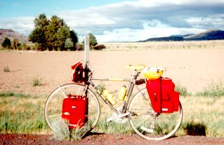

Originally written in 1995
This is a rambling article about the wonders of touring bikes. As you can guess, I have a touring bike. It is 7 years old and has more than 10,000 miles on it (6000 of those in the last year and a half). I've used it for everything from riding along gravel bike trails to fully loaded touring to riding centuries (and a double century) to racing (OK, so it wasn't the best bike for racing, but I wanted to give it a try and didn't feel it was worth buying a racing bike when I didn't know whether or not I'd enjoy it).
|  |
| My trusty touring bike |
Many people seen to think that the best all purpose bike is a hybrid: it's fast and light enough to go on roads, but tough enough for dirt roads. I would like to argue that touring bikes are the best multipurpose bikes. Many newbie bikers don't know what a touring bike is. So, here's what a touring bike is and why it's so wonderful.
True touring bikes are designed to go long distances carrying lots of gear as comfortably as possible. Thus they are pretty strong and tough, but still relatively light in weight. They have dropped (racing bike style) handlebars to allow you many hand positions and to allow you a somewhat more aerodynamic position, which is important on longer or faster rides. The traditional touring bike has bar-end shifters to enable them to be reached easily, but many touring bikes today have either down-tube shifters or STI (integrated into the brake levers) shifters. The pedals come with toe clips, or, often nowadays, they have clipless pedals. The traditional touring bike has cantilever (mountain bike style) brakes to give you more clearance for wider tires and fenders.
They have a longer wheelbase (the wheelbase is the distance between the center of the front and rear wheels) for a stable ride. (I have enough of a gap between my seat tube and the rim to put on a big touring tire, plus a fender and a pump!) The frames are a bit flexible, to absorb road shock better. They have granny gears (a third, small chainring) that let you go up any hill. Or at least, I haven't met a paved hill that I couldn't go up. They have reasonably comfortable saddles. The rims are heavier and stronger than racing rims: one of the most popular ones is the Mavic T217, a 700c version of Mavic's 217 MTB rim. You can put about any kind of tires you want on a touring bike, depending on your leanings (and on the exact width of your rims): from narrow racing tires for speed to wide knobbies for riding on dirt roads.
They are the ultimate multipurpose bike, since they're tough enough for riding through urban potholes and rural dirt roads, but they're fast enough that you'll be able to keep up with with friends who have racing bikes (unless they train seriously!).
Some people say that they want hybrids because they don't like dropped handlebars and don't have alot of money. Most people don't like dropped bars because they don't like the more crouched position. I will argue that although upright hybrid posture may seem more comfortable at first, for longer rides dropped bars are the way to go. The main reason is because of reduced surface area, which makes a huge difference in a headwind, or when you're trying to go fast on the flats. Another reason is that you can change your hand position all the time, which not only eases the strain on your hands, but also enables you to be more or less upright, which makes it easier on your back.
Despite being great bikes, touring bikes are very difficult to find nowadays. Why? Because most first-time bike buyers don't know very much about bikes and what they want to do with them. Mountain bikes are cool, and people think that dropped bars are only for racers. So regular folks buy mountain bikes or hybrids, and indeed they find that they're very nice for short rides when they want to go at a slowish pace. But if they want to go farther or faster, they soon find that they don't have the right bike. So in most cases they go out and buy racing bikes, and keep the mountain bike for short slow trips. This may be OK for someone with alot of space, who can store 2 bikes, and who has enough money to buy two bikes. But for someone with less space and less money, the way to go is to spend the time and effort to get a touring bike that fits you right, and then you'll have one bike that will do everything (except for road racing and serious off-raod riding).
More bike articles